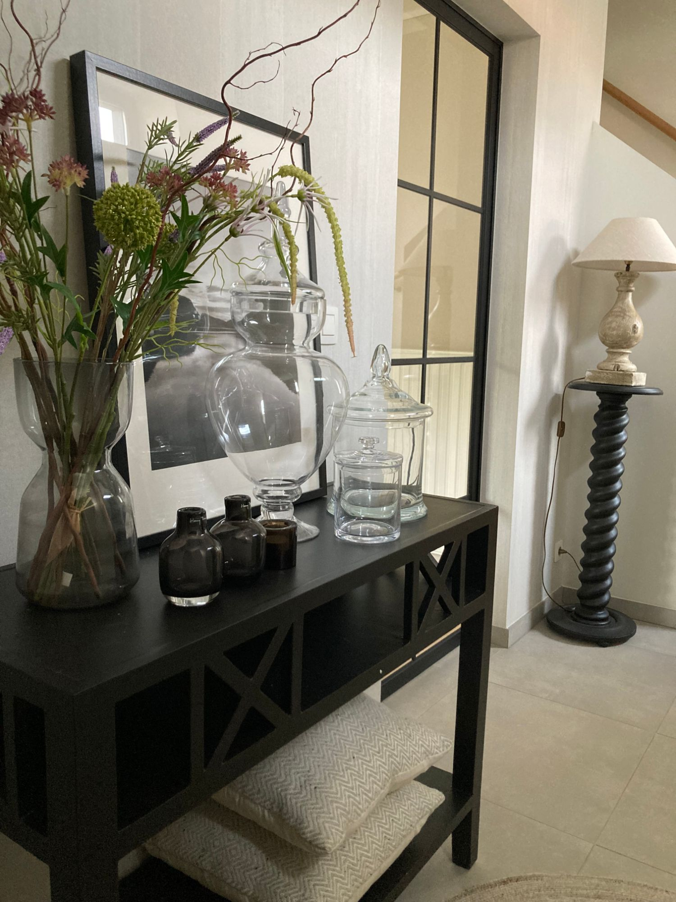

Ik ben Danielle, fitte vijftiger, gepassioneerd door interieur.

Na een boeiende carrière in de voedingsindustrie, maakte ik in 2019 een switch naar de interieursector, waar ik ervaring opdeed met kleuradvies voor schilder- en behangwerken, raamdecoratie, en het begeleiden van klanten bij keuzes van kleur en materiaal bij renovaties en totaalprojecten, tot en met inrichting met meubilair en decoratie.
Toch bleef ik op m’n honger zitten om meer mooie interieurs te creëren, om meer mensen blij te maken met een vernieuwde thuis, om mijn creativiteit en passie ten volle te benutten.
Daarom besloot ik om te starten met DISA, die eerlijk, laagdrempelig en toegankelijk interieuradvies aanbiedt voor elk budget en elke stijl.
Kijk snel bij wat ik doe en hoe, of stuur mij vrijblijvend een mailtje voor meer info. Tot binnenkort!
Danielle
Voor ik advies geef, luister ik. Naar hoe u leeft, wat u mooi vindt en waar u zich thuis bij voelt.
Ik zeg ook wanneer iets niet werkt. Liever een eerlijk advies dan een mooi verhaal.
Advies op maat van uw budget en tempo — geen opgelegde luxe, wel een haalbaar plan.
“Ik geloof dat elke woning kan aanvoelen als thuis — het begint bij goed luisteren.”Danielle, oprichter DISA